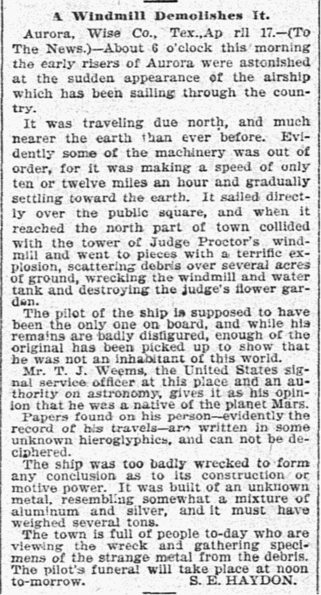

Aurora crash story
Texas, 1897

In April 1897, the Dallas Morning News printed S. E. Haydon's report that an airship had hit a windmill at Aurora, killing a pilot said to be not of this world, who was buried in the town cemetery. A longtime resident later told Time that Haydon invented it to draw attention to the dying town, and searches since have found nothing conclusive. A state historical marker at the cemetery calls it a legend. 1
Open in the interactive Watcher
Sources
- Aurora, Texas, UFO incident Wikipedia